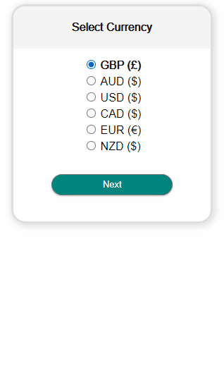
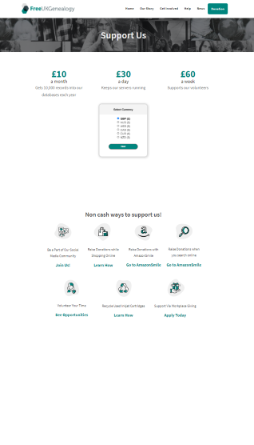

Tools Used
I started volunteering with FreeUKGenealogy in December of 2020 to help with the complete redesign of their website as a WordPress site. After doing a few tweaks to the header menu, I was asked to take over the design of their donation page.
The desire was to have an interactive widget that could take a user through the steps of picking a currency, a donation platform, and gave the option of applying Gift Aid to a donation in the case that the user was living in the UK. Ideally, having a tool that could be used on the other sites run by the same organization (but not switching over to WordPress).
To this end, I wrote a tool in HTML and JavaScript which swapped content on interacts in order to show all of the steps required without redirecting to another page. This tool can be easily referred to by the WordPress page, and will be easily modified for use by the other CMS.


Back to Project List